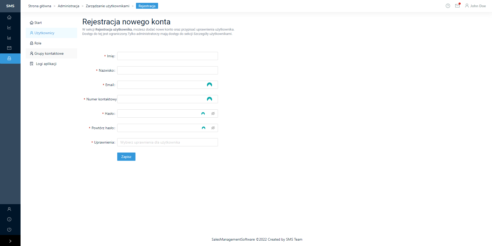

Konta użytkowników
Tabela użytkownicy
Po przejściu do zakładki „Konta użytkowników” wyświetlona zostaje lista z utworzonymi kontami i najważniejszymi informacjami z nimi związanymi.
{kind=link}
Tworzenie nowego konta użytkownika
Aby stworzyć nowego użytkownika należy nacisnąć wyżej tabeli przycisk „Utwórz nowe konto”. Następnie wyświetlony zostanie formularz rejestracji nowego użytkownika w aplikacji SMS. Należy uzupełnić wymagane pola i nacisnąć „Utwórz konto” w celu utworzenia konta.
{kind=link}
Edycja istniejącego użytkownika
Do edytowania istniejących kont został dodany przycisk „Edytuj” w tabeli z spisem wszystkich użytkowników w aplikacji SMS. Każda pozycja w tabeli z kontem użytkownika w ostatniej rubryce zawiera przycisk „Edytuj”, należy go nacisnąć. Następnie zostanie wyświetlony formularz do edycji użytkownika wraz z pobranymi aktualnymi danymi na jego temat. Po pomyślnej edycji trzeba nacisnąć przycisk „Zapisz zmiany” w celu wprowadzenia zmian.
{kind=link}
Rodzaje kont użytkowników
Konto administratora
Uprawnienia i role:
Administratora posiada możliwość utworzenia nowego konta.
Administrator określa poziom uprawnień poprzez przypisanie uzytkownika do konkretnej grupy lub grup.
Tworzenie nowego konta.
Administrator posiada możliwość wprowadzenia oraz aktualizacji danych użytkownika [ imię, nazwisko, adres email, numer kontaktowy ].
Resetowanie hasła dla dowolnego użytkownika poprzez wygenerowanie wiadomości email w raz z linkiem przekierowującym do formularza w którym to użytkownik będzie miał możliwość ustawienia nowego hasła.
Administrator posiada wszelkie inne uprawnienia dotyczące pozostałych użytkowników.
Konto koordynatora
Uprawnienia i role:
Tworzenie oraz edycja kampanii sprzedażowych.
Definiowanie cyklicznej wysyłki raportów.
Tworzenie grup wraz z harmonogramem określającym cykliczną wysyłkę rapotów.
Dodawanie do grupy użytkownków na podsatwie istniejących kont.
Usuwanie z poszczególnych grup użytkowników.
Dodawanie oraz usuwania grup.
Dodawnia do grupy użytkownków na podstawie istniejących kont.
Usuwanie z poszczególnych grup użytkowników.
Wgląd do indywidualnych oraz grupowych postępów sprzedażowych z podziałem na trwające kampanie sprzedażowe.
Generowania rankingów sprzedażowych według zdefiniowanych parametrów ( ilość sprzedanych jednostek, wartość sprzedaży ).
Rozliczanie prowizji sprzedażowej.
Wygenerowanie raportu realizacji sprzedaży.
Zamknięcie kampanii sprzedażowej.
Wysłanie notyfikacji do dowolnego użytkownika systemu.
Autor notyfikacji posiada informację dotyczącą zapoznania się z wysłaną informacją ( data oraz godzina otworzenia notyfikacji ).
Autor posiada historię wysłanych notyfikacji.
Konto konsultanta
Uprawnienia i role:
Zalogowany użytkownik posiada możliwość wglądu do realizacji celów sprzedażowych.
Wglad do indywidualnych postępów celów sprzedażowych. Konsultant posiada również możliwość wglądu do grupowych postępów celów sprzedażowych.
Wgląd do naliczonej prowizji sprzedażowej.
Wgląd do grupowych postępów celów sprzedażowych na podstawie przypisanych kampanii sprzedażowych.
Wgląd do rankingów najlepszych sprzedawców według zdefiniowanych parametrów przez Koordynatora projektu.
Zalogowany użytkownik posiada informację odnośnie oczekujących notyfikacji wymagających zapoznania się z nimi.
Użytkownik posiada historię wysłanych notyfikacji.
Zalogowany użytkownik posiada dostęp do komunikatora z podziałem na grupy zgodnie z wcześniej nadanymi uprawnieniami.
Użytkownik posiada mozliwość komunikacji z dwolonym użytkownikiem systemu 1:1 ( komunikacja prywatna ).